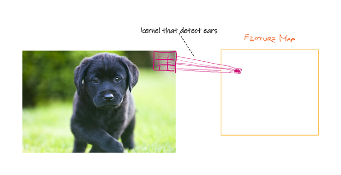
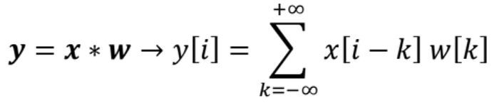
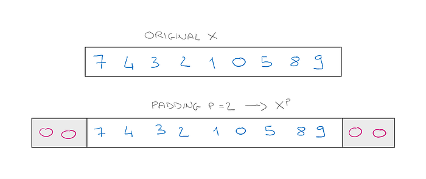
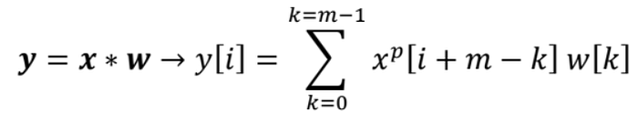
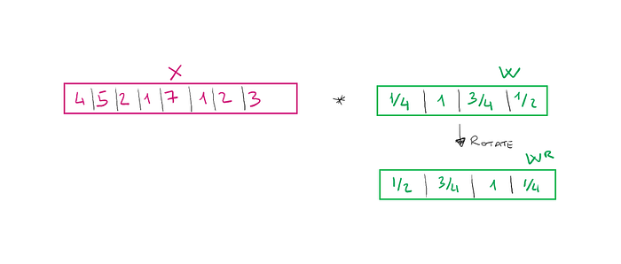
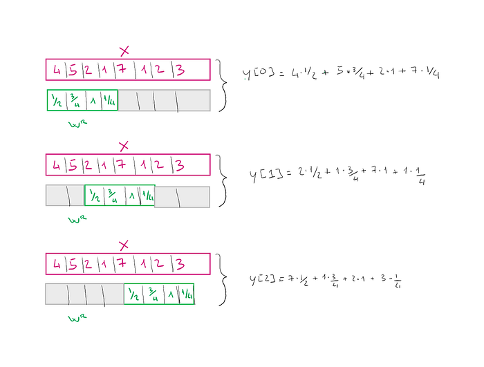
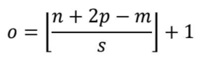
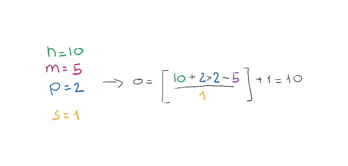
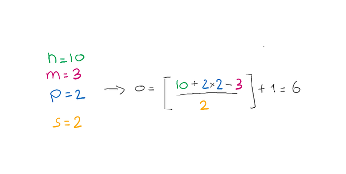

Convolutions in One Dimension using Python
Learn the building blocks of CNNs and stop getting size mismatch errors.
November 20, 2024 · CNN, Python, Convolution
I often see people who want to learn how to develop deep learning applications very quickly, they learn the basics of some library like PyTorch or Tensorflow but then they haven’t really understood what’s behind those magical functions that they use so superficially. It so happens, not infrequently, that when something doesn’t work or you need to customize some function nobody knows where to start.
When one is interested in computer vision one often starts to study Convolution Neural Networks, and from high levels, they are very understandable. But sometimes when my friends or colleagues are not dealing with images in two dimensions but have to use convolutions in one dimension (because they have to process a signal for example) they get very confused because they can’t imagine what is going on. This is because they have not fully understood CNNs building blocks. Hence the name of this article.
Introduction 📚
In 1959 David H. Hubel and Torsten Wiesel discovered a peculiar functioning of the human visual cortex. Neurons were activated differently depending on the image a person was looking at. Specifically, there were levels in the visual cortex. The first level was activated when looking at images with edges, the second level when adding details to the image, and so on…
Convolution Neural Networks are inspired by this very functioning. As you may know, they are divided into layers where each layer tries to extract features from the initial image being processed.
The first CNN was developed in the 1990s by Yann LeCun and is described in the famous paper Handwritten Digit Recognition with a Back-Propagation Network.
A bit of Background 👨🏼🎓
When developing a Machine Learning algorithm one of the most important things if not the most important thing is to extract the most relevant features, which is done in the feature engineering part of the project. In CNNs this process is done automatically by the network. Particularly in the early layers the network tries to extract the most important features of the image such as edges and shapes. In the last layers, on the other hand, it will be able to combine the various features to extract more complex features such as an eye or a mouth, which could be useful if, for example, we want to create a classifier of human images.
Let’s think of an image of a dog. We want to find an ear in this image to make sure there is a dog. We can create a filter or kernel that will run over the whole image a piece at a time to see if it can find an ear at various points in the image.

In the image, we have a set of weights (kernel) in purple that when multiplied by the pixel value of the input image tell us whether an ear is present or a chin is. How did we create these weight parameters? Well …at random! It will be the training of the network that will slowly learn the right weight parameters.
The resulting output (in orange) is called a feature map.
Often after a convolution, so after getting a feature map we have pooling layers that go to summarize even more information, then we’ll have another convolution and so on — but we don’t talk about the other layers in this article.
Convolutions in One Dimension 💻
We have intuitively understood how convolutions work to extract features from images. But convolutions are also often used with other types of data such as text, this is because convolution is nothing more than a formula that we need to understand how it works.
Convolution in one dimension is defined between two vectors and not between matrices as is often the case in images.
So we will have a vector x which will be our input, and a kernel w which will be a second vector.

The symbol denotes the convolution (it is not multiplication). Y[i] is the entry i of the resultant vector y*.
First, if you notice the extremes of the summation go from -inf to +inf, but this in Machine Learning does not make much sense. We usually prefix a certain size. Let’s say the input vector must have a size of 12. But what happens if the vector is smaller than the prefixed size? Well, we can add zeros at the beginning and end of the vector to make it the right size, this technique is called padding.

Then we assume that the original input x and the filter w had sizes n and m respectively, with n ≤ m. Then the input with padding will have size n + 2p. And the original formula will become as follows.

From the above formula, we can notice one thing. What we do is scroll the cells of the x_p vector and the w vector. Though, the vector x_p is scrolled from right to left and w from left to right. But then we can simply invert the vector w and perform the vector product between x_p and w_rotated.
Let’s visually see what happens. First, we rotate the filter.

What the initial formula tells us to do is to make the vector product between the two vectors, considering only a portion of the initial vector. This portion is called the local receptive field. We then slide the vector w_r by two positions each time, in which case we will say we are using a stride = 2. The latter is also a hyperparameter of the network that we will need to optimize.

Padding ️⃣
You should note that according to the padding mode we use we give more or less emphasis to some of the input cells. In the previous case, the cell x[0] was considered only once when we computed the output y[0]. Instead, the x[2] cell was considered in both the computation of y[1] and y[2], so it had more importance. We can also handle this importance for cells at the boundaries of the vector by using padding.
There are 3 different types of padding:
- Full mode: padding parameter p is set to p = m-1, where m is the kernel size. This padding causes the output to be larger than the input and is therefore rarely used.
- Same mode: is used to make sure that the output has the same size as the input. For example, in Computer Vision the output image will be the same size as the input image and is therefore often the most commonly used.
- Valid mode: when p =0, so we do not use padding.
How to determine the convolution output size?
Many people often get confused about the input and output sizes of the various layers of a CNN, and fight against mismatch errors! Actually figuring out how much will be the output size from a convolutional layer is quite simple.
Suppose we have an input x, a kernel w and want to compute the convolution y = xw*.
The parameters to be considered will be the size n of x, the size m of w the padding p and the stride s. The size o of the output will then be given by the following formula:

The symbols ⌊⌋ indicate the floor operation. For example ⌊2.4⌋ = 2.
Let’s see how to apply the formula with examples:

In this first example, we see that the output size is the same as the input size, so we infer that we used the same mode padding.
We see another example where we change the kernel size and stride.

Let’s code! ⌨️
If you are still a little confused so far, no problem. Let’s start getting our hands dirty with the code and things will be much clearer.
import numpy as np
def conv1D(x,w, p=0 , s=1):
'''
x : input vector
w : filter
p : padding size
s : stride
'''
assert len(w) <= len(x), "x should be bigger than w"
assert p >= 0, "padding cannot be negative"
w_r = np.array(w[::-1]) #rotation of w
x_padded = np.array(x)
if p > 0 :
zeros = np.zeros(shape = p)
x_padded = np.concatenate([zeros, x_padded, zeros]) #add zeros around original vector
out = []
#iterate through the original array s cells per step
for i in range(0, int((len(x_padded) - len(w_r))) + 1 , s):
out.append(np.sum(x_padded[i:i + w_r.shape[0]] * w_r)) #formula we have seen before
return np.array(out)Let’s try running this function on some real data and see the results. Let’s compare the result with NumPy's built-in function that calculates the convolution result automatically.
x = [3,6,8,2,1,4,7,9]
w = [4 ,0, 6, 3, 2]
conv1D(x,w,2,1)
'''
>>> array([50., 53., 76., 64., 56., 67., 56., 83.])
'''
np.convolve(x , w, mode = 'same')
'''
>>> array([50., 53., 76., 64., 56., 67., 56., 83.])
'''Final Thoughts 🤔
As you have seen, the result of the function we developed and that of NumPy's convolve method are the same. Convolution is an essential element of convolution neural networks and thus of modern computer vision. We often immediately start implementing sophisticated algorithms without understanding the building blocks of which it is composed. In my opinion, in the beginning, losing a little time to see in more detail the things that may seem more useless and boring can save us a lot of time in the future since we will know how to solve instantly the various errors we will find on our way. In the next article, I aim to generalize when done for the case in 2 dimensions! 👋🏽
The End
Marcello Politi
This article was published on Towards Data Science